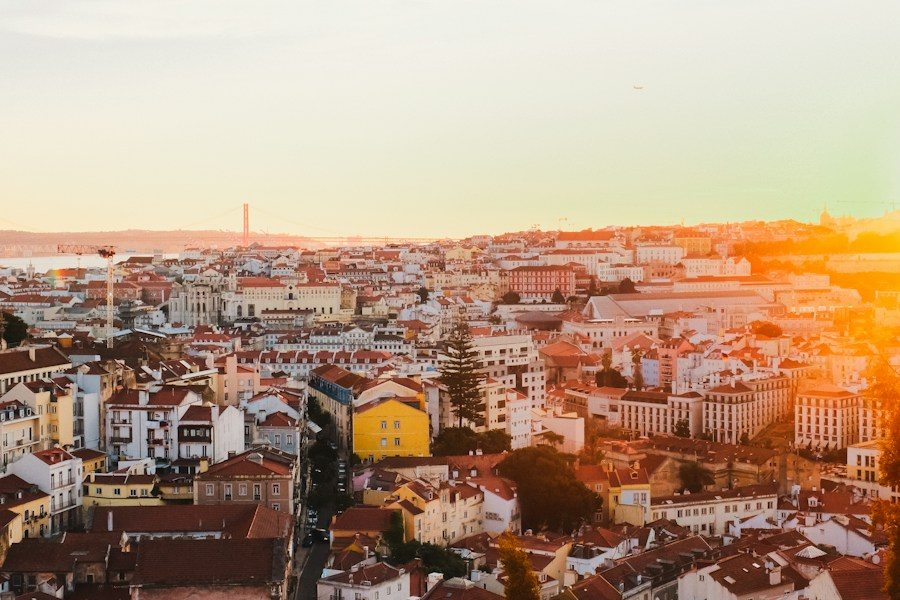

PTЛИССАБОН, ПОРТУГАЛИЯВАША СЛЕДУЮЩАЯ ОСТАНОВКА01 / 09
Португалия
Океан за окном. Солнечные улицы. Время для нового ритма жизни.
В новый город. К новым возможностям.
В жизнь, которую выбираете вы.
У моря, в большом городе или ближе к горам.
Выберите страну — начнём с неё.

PTЛИССАБОН, ПОРТУГАЛИЯОкеан за окном. Солнечные улицы. Время для нового ритма жизни.
Разложим большую идею на небольшие этапы.
Всё начинается с вашего «хочу».
Страна, которая вам близка.
И цель, которая вдохновляет.
Сохраните направление и список
вопросов для подготовки.
Уточните условия и документы.
Дальше — по вашему плану.
Подумайте о цели: работа, учёба или смена места жительства. Сравните язык, климат, стоимость жизни и расстояние до близких. Карта поможет сохранить направление, которое вам нравится.
Выбранная страна, цель поездки и список вопросов для подготовки. Маршрут можно скачать и вернуться к нему позже. Это отправная точка для планирования.
На официальном сайте консульства или миграционной службы страны назначения. Условия зависят от гражданства, цели и срока поездки и могут меняться. Проверяйте их до бронирований.
Конечно. Нажмите на другую страну на карте или выберите её из списка. Сохраните новый маршрут — он заменит предыдущий на этом устройстве.